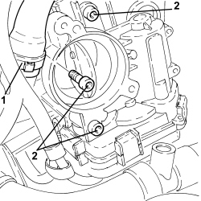

1060G50 THROTTLE BODY - R.R
- Path
- Procedures > 10 ENGINE > 1060 DIESEL INJECTION SYSTEM > 1060G DIESEL INJECTION PRESSURE PUMP ELECTRONIC CONTROL > 1060G50 THROTTLE BODY - R.R
- Kind
- repair procedure (removal / refitting; the operation number is the code)
- Applies to
- engines: 2.4 JTD 20v; all production periods
- Interactive page
- https://sloeber94.github.io/elrnDB-aBrrSpdr/en/#/946003002
Applies to: engines: 2.4 JTD 20v; all production periods
 Removing
Removing
 Refitting
Refitting- Make sure that the ignition key is in the OFF position, then disconnect the battery terminal (-).
Description | Connector | |
|---|---|---|
- | Battery |
Op. 1048B22 AIR SUPPLY HOSE FROM HEAT EXCHANGER TO INTAKE MANIFOLD - R + R
1. Loosen the band and disconnect the oil vapour recovery pipe from the engine oil filler.
2. Undo the bolts securing the throttle body.

Applies to: engines: 2.4 JTD 20v; all production periods
1. Move the throttle body (1a) out of its housing enough to disconnect the electrical connection (1b) and then remove it.
Description | Connector | |
|---|---|---|
1b | Integrated throttle casing actuator |
- Remove the gasket.

Applies to: engines: 2.4 JTD 20v; all production periods
Refitting
Removing- Place the gasket back in its housing.
- Connect the electrical connection to the throttle body, then place it back in position.
1. Tighten the bolts securing the throttle body to the recommended torque.
Component | Fastening | dia | Value (daNm) | Validity |
|---|---|---|---|---|
Throttle body | Bolt | M8 | 2.5 | 2.4 JTD 20V |
2. Connect the oil vapour recovery pipe to the engine oil inlet fitting and tighten the band.

Applies to: engines: 2.4 JTD 20v; all production periods
Op. 1048B22 AIR SUPPLY HOSE FROM HEAT EXCHANGER TO INTAKE MANIFOLD - R + R
- Connect the negative battery terminal.
Topics linked from this page (3)
- 1048B22 AIR SUPPLY HOSE FROM HEAT EXCHANGER TO INTAKE MANIFOLD - R + R
- A001 BATTERY
- N075 BUILT-IN THROTTLE BODY ACTUATOR